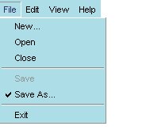
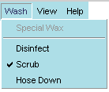

<menuitem />
| Attributs | Enfants communs |
| value | * * * |
| key | |
| acceltext | |
| accesskey | |
| disabled | |
| oncommand | |
| observes | |
| id | |
| class | |
| checked | |
| type | |
| name | |
| data |
<menuitem> est le widget qui représente l'élément réel dans le menu. Les items de menu apparaissent typiquement comme les enfants d'un menupopup dont le parent est <menu>. La structure de base d'un menu de XUL est comme suit:
<menu value="File">
<menupopup>
<menuitem value="Open" />
<menuitem value="Close" oncommand="window.close()"/>
<menuseparator/>
<menuitem value="Save" />
<menuitem value="Exit"/>
</menupopup>
</menu>
L'attribut value indique le nom affiché pour le menuitem.Syntaxe
<menuitem value="string" />Exemple
<menuitem value="New" />Notes
<menuitem value="Open" />
Aucune.
Une fois checked placé à "true", le menu lui-même apparaît avec une marque de contrôle à côté de lui dans le menubar.Syntaxe

checked="[true | false]"Exemple
<menuitem value="AutoSave" checked="true" />Notes
Les items de menu peuvent être contrôlés de cette façon ou ils peuvent être créés en tant qu'éléments d'un type de menu radio ou checkbox (voir l'attribut type ci-dessous), dans ce cas les traits de repère apparaissent sans devoir placer cet attribut. Vous pouvez vérifier l'état de cet attribut en utilisant quelque chose comme l'exemple suivant en Javascript, où "autosave" est id du menuitem:autosave_item = document.getElementById("autosave");
current_state = autosave_item.getAttribute("checked");
if (current_state = true) {
doAutoSave()
}
oncommand est un attribut facultatif pour créer des dérouleurs d'événement pour les attaches principales et les commandes de menu.Syntaxe
<menuitem id="string" value="string" oncommand="code dérouleur d'évènement" />Exemple
<menuitem id="saveKey" value="Save All" oncommand="SaveAll()" />Notes
Aucune.
L'attribut type indique le genre de menu qui contient le(s) menuitem(s) donné(s).Syntaxe
<menuitem type="[ radio | checkbox ]" />Exemple
<menuitem value="Auto Save" type="radio" name="save_type" />Notes
<menuitem value="Manual Save" type="radio" name="save_type" />
En plus du type de menu par défaut, qui n'a aucune marque de contrôle ou d'autres indicateurs, vous pouvez également employer l'attribut type pour indiquer des menuitems de type radio et checkbox. Type, dans ce cas-ci, est une fonction de menuitem et pas du menu lui-même. Un menu radio permet à l'utilisateur de contrôler un simple menuitem à tout moment. Quand un élément est choisi dans le menu radio, cet élément est "checké", et n'importe quel autre élément qui l'a été auparavant n'est plsu mis en valeur. Cette fonctionnalité exige que tous les menuitems participant à ce groupe aient le même nom name.

Notez que le premier menuitem ne fait pas partie de l'ensemble radio. Quand l'utilisateur choisit "Scrub" du menu de lavage, l'élément de désinfection Disinfect qui a été précédemment choisi est désélectionné. Dans ce scénario, l'utilisateur peut seulement choisir un type de lavage à la fois.
Un type de menu checkbox emploie également des contrôles pour indiquer les éléments choisis, mais il n'interdit pas la sélection d'éléments multiples. Quand le menu de l'exemple ci-dessus est indiqué comme menu checkbox, l'utilisateur peut choisir de lancer un groupe d'éléments.
Notez que les noms ne sont pas nécessaires pour les menuitems checkbox, parce que la validation de chaque élément fonctionne indépendamment des autres.

name est utilisé par les menuitems radio associés entre eux.Syntaxe
name="string"Exemple
<menuitem value="Auto Save" type="radio" name="save_type" />Notes
<menuitem value="Manual Save" type="radio" name="save_type" />
Il n'est pas nécessaire d'utiliser des noms avec des menus de type checkbox, parce que les menuitems fonctionnent indépendamment les uns des autres. Notez également que vous pouvez seulement nommer une partie des menuitems dans un menu particulier pour faire un positionnement; tous les menuitems dans un menu particulier n'ont pas besoin de faire partie du même ensemble.
data est un attribut facultatif employé pour indiquer un texte supplémentaire associé au menuitem.Syntaxe
<menuitem data="string">Exemple
<menuitem id="hidden" value="one thing" data="another thing"Notes
L'attribut data fournit une manière commode de stocker du texte supplémentaire pour un menuitem, texte qui peut être caché de l'utilisateur mais être programmé consultable si nécessaire. Par exemple, pour accéder aux données du menuitem dans l'exemple ci-dessus, il suffit simplement d'obtenir le menuitem et de demander la valeur de son attribut data:
var item = document.getElementById("hidden"); var hiddenText = item.getAttribute("data");